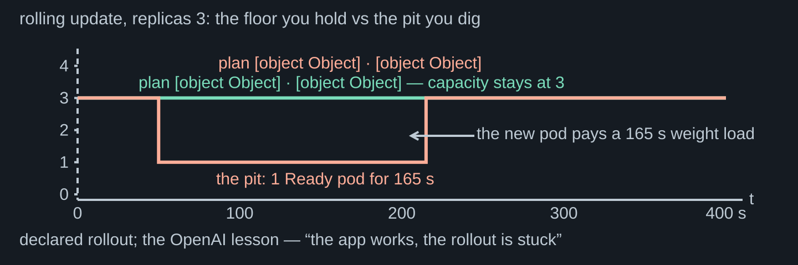

Kubernetes for LLM serving:
pods, probes, releasesKubernetes для LLM-сервинга:
поды, пробы, релизы
The vocabulary that runs the fleet you already have — declared state instead of a by-hand loop.
Словарь, который управляет уже существующим у вас флотом, — декларация состояния вместо ручного цикла.
The fleet you already run
Флот, который у вас уже работает
Topic 11 · draftWhat you have
From Topics 08–09: a compose fleet — gateway and llama.cpp engines with mem_limit, restart policy, a hash-chained journal. From Topic 10: shard replicas behind one address. It works — you started it, you restarted it, you rolled it by hand.
Что у вас есть
Из тем 08–09: compose-флот — шлюз и движки llama.cpp с mem_limit, политикой рестарта и хэш-цепочкой журнала. Из темы 10: реплики шардированной модели за одним адресом. Это работает — вы его запускали, перезапускали и обновляли руками.
What breaks at scale
At three engines the by-hand loop still works. At thirty it does not: who watches liveness at 3 a.m., who rolls the new image engine by engine, who holds capacity while weights load? The answer is not a bigger script — it is a controller that reads declared state.
Что ломается на масштабе
На трёх движках ручной цикл ещё работает. На тридцати — нет: кто смотрит живость в 3 часа ночи, кто выкатывает новый образ движок за движком, кто держит ёмкость, пока грузятся веса? Ответ — не скрипт побольше, а контроллер, читающий декларацию состояния.
Desired state, not commands
Желаемое состояние, а не команды
Topic 11 · draftThe deal
You declare what should exist — a Deployment: replicas 3, memory limits, probes. Controllers reconcile fact to declaration continuously. kubectl apply is a claim about the world, not an action on it; the cluster keeps the claim true.
Суть сделки
Вы декларируете, что должно существовать, — Deployment: реплик 3, лимиты памяти, пробы. Контроллеры непрерывно сводят факт к декларации. kubectl apply — утверждение о мире, а не действие над ним; кластер поддерживает это утверждение истинным.
Why this suits LLM serving
The manifest is data validated by a schema — and the lab's simulators consume the same shapes: requests == limits, probe periods and thresholds. A pod is the smallest unit: the member container from Topic 09, now declared, schedulable and replaceable.
Почему это подходит LLM-сервингу
Манифест — данные, проверяемые схемой, и симуляторы лабы потребляют те же формы: requests == limits, периоды и пороги проб. Под — наименьшая единица: member-контейнер из темы 09, теперь заявленный, планируемый и заменяемый.
A pod inherits your container's contract
Под наследует контракт вашего контейнера
Topic 11 · draftSame physics, new name
From Topic 09: mem_limit 1200m, OOMKilled as exit 137, restart until ready. Kubernetes renames the contract: resources.limits.memory is the same cgroup ceiling; crossing it is OOMKilled — the pod restarts, now under the Deployment's backoff.
Та же физика, новое имя
Из темы 09: mem_limit 1200m, OOMKilled как exit 137, рестарт до готовности. Kubernetes переименовывает контракт: resources.limits.memory — тот же cgroup-потолок; его пересечение — OOMKilled, под рестартует, теперь уже с backoff-ом Deployment.
What Kubernetes adds
requests — the scheduler's promise: where this pod fits. limits — the runtime ceiling: what it may use. Equal requests and limits put the pod in the Guaranteed class — the next slides turn that into a number and a probe policy.
Что добавляет Kubernetes
requests — обещание планировщику: куда этот под помещается. limits — потолок рантайма: что он может использовать. Равные requests и limits переводят под в класс Guaranteed — следующие слайды превращают это в число и политику проб.
The pod ledger becomes a manifest
Ведомость пода становится манифестом
Topic 11 · draft| TP degree pСтепень TP p | Memory per podПамять на под | Manifest (requests == limits)Манифест (requests == limits) |
|---|---|---|
| 1 | (16 + 4) / 1 + 1.5 = 21.5 GiB | memory: 21.5Gi, nvidia.com/gpu: 1 |
| 2 | (16 + 4) / 2 + 1.5 = 11.5 GiB | memory: 11.5Gi, nvidia.com/gpu: 2 |
| 4 | (16 + 4) / 4 + 1.5 = 6.5 GiB | memory: 6.5Gi, nvidia.com/gpu: 4 |
The T10 ledger travels unchanged: weights and KV cache shard by p, the fixed 1.5 GiB does not. Tensor-parallel degree = pod size — you already know this arithmetic.
Ведомость T10 переезжает без изменений: веса и KV-кэш делятся на p, фиксированные 1,5 ГиБ — нет. Степень тензорной параллельности = размер пода — эту арифметику вы уже знаете.
QoS: Guaranteed for a GPU pod
QoS: Guaranteed для GPU-пода
Topic 11 · draftThe three classes
Guaranteed: requests == limits on every container — last to be evicted under node pressure. Burstable: requests < limits — cheaper, evictable. BestEffort: nothing promised — first out.
Три класса
Guaranteed: requests == limits у каждого контейнера — выселяется последним при давлении на узел. Burstable: requests < limits — дешевле, выселяем. BestEffort: ничего не обещано — вылетает первым.
Why the choice is mechanical
The weights are resident and non-negotiable. Under-promise and the scheduler co-locates a neighbour the pod cannot survive next to — then the node runs hot and someone is evicted. The lab's hidden test rejects requests < limits: Burstable is not a style, it is a different failure mode.
Почему выбор механический
Веса резидентны и не подлежат торгу. Пообещаешь меньше — планировщик подселит соседа, рядом с которым под не выживет, узел разогреется, и кого-то выселят. Скрытый тест лабы отвергает requests < limits: Burstable — не стиль, а другой режим отказа.
Service: one address over changing pods
Service: один адрес поверх меняющихся подов
Topic 11 · draftPods are cattle
A pod's IP dies with the pod. A Service is the stable address — the striped bar in the lab's manifest figure: it selects the fleet by label and load-balances across Ready pods only. Clients never learn pod addresses.
Поды — скот
IP пода умирает вместе с подом. Service — стабильный адрес, полосатая плашка на фигуре манифеста лабы: он выбирает флот по метке и балансирует нагрузку только по Ready-подам. Клиенты никогда не узнают адресов подов.
Why "Ready" is load-bearing
Rolling updates are safe only because the endpoint list tracks readiness: a pod dies — the list shrinks; a pod boots — it joins when Ready. For a pod that spends 165 s just loading weights, "Ready" needs a precise definition — the next two slides make it one.
Почему «Ready» — несущее слово
Роллауты безопасны только потому, что список эндпоинтов следит за готовностью: под умер — список ужался; под поднялся — вошёл, когда стал Ready. Для пода, который тратит 165 с только на загрузку весов, «Ready» требует точного определения — следующие два слайда его дают.
The pod is not Ready until the weights land
Под не Ready, пока не легли веса
Topic 11 · draft

period 5 s × failureThreshold 40 = 200 s ≥ 165 s, with 35 s of headroom for a slower disk.Заявленные учебные числа — холодный старт из прогона флота T09; бюджет — из регуляторов лабы 11. Загрузка повторяет members из T09 — extract, weights, init, /health, — и для модели 8B это 165 с до первого токена. startupProbe обязан покрывать всю загрузку: period 5 с × failureThreshold 40 = 200 с ≥ 165 с, с запасом 35 с на медленный диск.Three probes, three jobs
Три пробы, три работы
Topic 11 · draftThe vocabulary
startupProbe gates the boot — liveness and readiness wait until it passes once. readinessProbe is the traffic gate: fail it and the Service stops routing; the pod lives. livenessProbe is the hang detector: fail it and the pod is killed and restarted.
Словарь
startupProbe сторожит загрузку — liveness и readiness ждут, пока она не пройдёт один раз. readinessProbe — ворота трафика: провал — Service перестаёт маршрутизировать, но под жив. livenessProbe — детектор зависания: провал — под убит и перезапущен.
For an LLM pod specifically
A slow generation must fail readiness, never liveness — killing a healthy but busy engine loses its KV cache and queue. The posttest voice: liveness with a short timeout murders a working pod; readiness throttles traffic instead. Ready only after weights: that is the lab's goes_ready().
Специфика LLM-пода
Медленная генерация должна проваливать readiness и никогда — liveness: убить здоровый, но занятый движок — потерять его KV-кэш и очередь. Голос пост-теста: liveness с коротким таймаутом убивает работающий под; readiness вместо этого режет трафик. Ready — только после весов: это goes_ready() из лабы.
Probe budget: one multiplication
Бюджет пробы: одно умножение
Topic 11 · draftRolling update: hold the floor
Роллаут с заменой: держим пол
Topic 11 · draft

maxUnavailable 0, maxSurge 1 adds the replacement before any old pod dies: capacity never leaves 3. The plan maxUnavailable 2 deletes first and serves on one pod while the new one loads weights. The floor is replicas − maxUnavailable.Заявленный учебный роллаут — реплик 3; яма длится ровно столько, сколько грузятся веса, 165 с. План maxUnavailable 0, maxSurge 1 добавляет замену прежде, чем умрёт хоть один старый под: ёмкость не опускается ниже 3. План maxUnavailable 2 сперва удаляет и держит сервис на одном поде, пока новый грузит веса. Пол = replicas − maxUnavailable.The OpenAI lesson: surge is speed, not capacity
Урок OpenAI: surge — скорость, а не ёмкость
Topic 11 · draftThe reported failure
KubeCon NA 2026, "Rolling Out LLM Inference Engines on Kubernetes": LLM pods are not stateless microservices — they live for hours and pay a long boot. The failure mode: the app keeps serving while the rollout is stuck — every new pod is booting, every old pod is immortal.
Описанный отказ
KubeCon NA 2026, «Rolling Out LLM Inference Engines on Kubernetes»: поды LLM — не бестелесные микросервисы, они живут часами и платят долгой загрузкой. Режим отказа: приложение продолжает сервис, пока роллаут завис — каждый новый под грузится, каждый старый бессмертен.
The knob that matters
maxSurge buys how fast new pods start arriving; maxUnavailable decides whether capacity dips while they boot. The lab's fix-the-bug exercise hands the students the dip and asks for the floor: replicas − maxUnavailable — not a bigger surge.
Регулятор, который решает
maxSurge покупает скорость прибытия новых подов; maxUnavailable решает, провалится ли ёмкость, пока они грузятся. Упражнение «почини баг» в лабе вручает студентам провал и спрашивает пол: replicas − maxUnavailable — а не surge побольше.
Helm: a release is history
Helm: релиз — это история
Topic 11 · draftValues in, revisions out
A chart is a template; values are the declared numbers — the ledger, the probe budget. Every helm upgrade stamps a new revision: 1 → 2 → 3. helm history lists them; nothing is ever overwritten.
Values на входе, ревизии на выходе
Chart — шаблон; values — заявленные числа: ведомость, бюджет пробы. Каждый helm upgrade штампует новую ревизию: 1 → 2 → 3. helm history перечисляет их; ничего никогда не перезаписывается.
Rollback creates, it does not rewind
helm rollback to revision 1 from history [1, 2, 3] creates revision 4 with the content of revision 1. History stays append-only — the same honesty as the T09 journal. The lab's ReleaseSim pins it: an unknown revision is an error; an upgrade without values inherits the previous ones.
Откат создаёт, а не перематывает
helm rollback к ревизии 1 из истории [1, 2, 3] создаёт ревизию 4 с содержимым ревизии 1. История остаётся append-only — та же честность, что у журнала T09. ReleaseSim лабы это закрепляет: неизвестная ревизия — ошибка; upgrade без values наследует предыдущие.
ReleaseSim: the drill
ReleaseSim: дрилл
Topic 11 · draftGPU Operator: the dictionary
GPU Operator: словарь
Topic 11 · draft| PieceЧасть | What it doesЧто делает | You writeЧто пишете вы |
|---|---|---|
| driver container | loads the NVIDIA kernel driver on every GPU nodeставит kernel-драйвер NVIDIA на каждый GPU-узел | nothing — the Operator's DaemonSetничего — DaemonSet оператора |
| container-toolkit | makes the container runtime GPU-capableделает container-рантайм GPU-способным | nothingничего |
| device plugin | advertises nvidia.com/gpu as a schedulable quantityобъявляет nvidia.com/gpu планируемой величиной | resources.limits: nvidia.com/gpu: 1 |
| DCGM exporter | GPU metrics for dashboards — the T13 bridgeGPU-метрики для дашбордов — мост к T13 | nothingничего |
The course trains the pod-side word — nvidia.com/gpu: 1 — and names the installation machinery; a real Operator install needs a cluster, and this course runs on laptops.
Курс тренирует слово со стороны пода — nvidia.com/gpu: 1 — и называет установочную машинерию; настоящий дистрибутив оператора требует кластера, а курс идёт на ноутбуках.
Sharing one GPU: slicing, MIG, MPS
Делим один GPU: slicing, MIG, MPS
Topic 11 · draftThe three words
Time-slicing: the plugin advertises replicas: 4 — four pods share one GPU by time slices, no memory isolation; one OOM hits all. MIG (Ampere+): hardware slices with isolated memory — a fault stays inside its slice. MPS: merged contexts — middle ground on both axes.
Три слова
Time-slicing: плагин объявляет replicas: 4 — четыре пода делят один GPU временными срезами, изоляции памяти нет; один OOM бьёт по всем. MIG (Ampere+): аппаратные срезы с изолированной памятью — отказ остаётся внутри своего среза. MPS: объединённые контексты — середина по обеим осям.
Why vocabulary only
No GPUs at hand — the topic says so openly. What transfers from this course is the arithmetic you already own: the ledger decides how many pods a device can honestly host, with or without sharing. DRA (GA in k8s 1.34) is the future allocation API — one sentence, no drill.
Почему только словарь
GPU под рукой нет — тема говорит об этом открыто. Что переезжает из курса — арифметика, которой вы уже владеете: ведомость решает, сколько подов устройство честно вместит, с шарингом или без. DRA (GA в k8s 1.34) — будущий allocation-API: одно предложение, без дрилла.
Lab 11: the map
Лаба 11: карта
Topic 11 · draftTen checkpoints
Quizzes q1–q3 with "why" follow-ups — the checkpoint closes only after the reason. Exercises: pod_resources → probe_budget/goes_ready → fix the rollout floor → capstone class ReleaseSim. Posttest p1–p3 plus the T09 bridge.
Десять чекпойнтов
Квизы q1–q3 с фоллоу-апами «почему» — чекпойнт закрывается только после причины. Упражнения: pod_resources → probe_budget/goes_ready → почини пол роллаута → капстоун-класс ReleaseSim. Пост-тест p1–p3 плюс мост к T09.
The star challenge
Outside the checkpoint count: budget the startup probe — pick period × threshold so the budget covers 165 s and stays ≤ 300 s. The page recomputes your printed result against the declared model and rejects invented numbers; the reference solution stays hidden until you pass.
Звёздный челлендж
Вне счёта чекпойнтов: забюджетируй startup-пробу — подбери period × threshold так, чтобы бюджет покрывал 165 с и оставался ≤ 300 с. Страница пересчитывает ваш напечатанный результат по заявленной модели и отвергает выдуманные числа; эталонное решение скрыто до сдачи.
Honesty: a declared model of a cluster
Честность: заявленная модель кластера
Topic 11 · draftWhat this is
The lab says it in the intro and the footer: this is a teaching model of a cluster, not your cluster. The controllers are deterministic simulators running in your browser; the manifests carry the same fields a real Deployment would.
Что это такое
Лаба говорит это в интро и футере: это учебная модель кластера, а не ваш кластер. Контроллеры — детерминированные симуляторы в вашем браузере; манифесты несут те же поля, что и настоящий Deployment.
Where the numbers come from
Every number is course-inherited and named: 165 s from the T09 fleet run (seminars/runs/2026-11-07-topic09-fleet-mac/README.md), the ledger from T10, the probe arithmetic from the manifest. Nothing is invented as a benchmark — and a real cluster's journal would replace these numbers one for one.
Откуда числа
Каждое число унаследовано курсом и названо: 165 с — из прогона флота T09 (seminars/runs/2026-11-07-topic09-fleet-mac/README.md), ведомость — из T10, арифметика проб — из манифеста. Ничего не выдумано как бенчмарк — и журнал настоящего кластера заменит эти числа один к одному.
Posttest and the T09 bridge
Пост-тест и мост к T09
Topic 11 · draftThe three answers
p1: Guaranteed means requests == limits on every container. p2: a slow generation must fail readiness, never liveness. p3: helm rollback from history [1, 2, 3] to revision 1 creates revision 4. Bridge b1 ← T09: a rolling update replays the restart members — extract, weights, init, health — inside the startup probe of the new pod.
Три ответа
p1: Guaranteed означает requests == limits у каждого контейнера. p2: медленная генерация должна проваливать readiness и никогда — liveness. p3: helm rollback из истории [1, 2, 3] к ревизии 1 создаёт ревизию 4. Мост b1 ← T09: роллаут повторяет restart-members — extract, weights, init, health — внутри startup-пробы нового пода.
The milestone
A reproducible deployment and a rollback runbook: the manifest numbers from the ledger, the probe budget with its headroom, the rollback command — and the revision number you expect to exist after it. One page, checked against ReleaseSim.
Майлстоун
Воспроизводимый деплой и ранбук отката: числа манифеста из ведомости, бюджет пробы с запасом, команда отката — и номер ревизии, который вы ожидаете увидеть после неё. Одна страница, сверенная с ReleaseSim.
Декларация вместо команд.
Откат — новая ревизия, не переписанная история.
Declaration instead of commands.
A rollback is a new revision, not a rewritten history.
Name the ledger. Budget the boot. Hold the floor.
Roll back to a new revision.
Назови ведомость. Забюджетируй загрузку. Держи пол.
Откатывайся к новой ревизии.